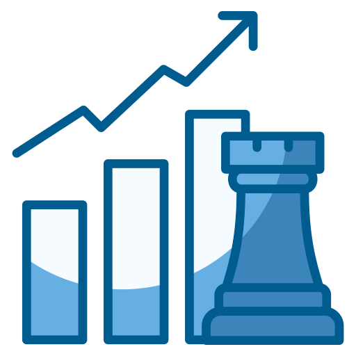

Aspiring Fellow of the Casualty Actuarial Society (FCAS)
Justin Kim
Portfolio Analytics & Insights Analyst
formerly, Actuarial Analyst
Get To Know More
About Me
Experience
2+ years Data Analytics & Actuarial Practices
Education
B.Math. Bachelors Degree Math + Statistics + Business Administration
Hi! I'm Justin, a Portfolio Analytics & Insights Analyst at Co-operators with over 2 years of experience in
insurance analytics, predictive modeling, and business strategy.
My work focuses on portfolio monitoring, pricing analysis, and MLOps to support actuarial functions such
as rate indications, segmentations, and performance evaluation. I specialize in delivering data-driven insights through
modeling using R and Python and visualizing results using Power BI and R Shiny to inform strategic decision-making
across personal auto, home and commercial lines.
Explore My
Experience
Analytical Tools
Python
Experienced
SQL
Experienced
R
Experienced
Power BI
Experienced
Tableau
Intermediate
Excel
Experienced
HTML/CSS/JS
Intermediate
Git
Experienced
Quantitative Insights
Quantitative Analysis
Experienced
A/B Testing
Intermediate

Growth Strategy
Intermediate
Causal Inference
Experienced
Forecasting
Experienced
Machine Learning
Intermediate
Portfolio Analytics & Insights Analyst
January 2025 - Present
Power BIShinyEarnixLLMPythonSQLAirflowCausal AnalysisRegulatory Reporting
üöÄ Dashboard Development: Built the Future of Portfolio Monitoring dashboard in Power BI with advanced DAX, tracking quotes, in-force, premium, claims (CY/AY).
üìà Modeling: Developed GLM models (Non-Renewal, Quotes, Premium Realization) in a Shiny App, improving decision accuracy and review speed.
ü߆ AI Integration: Launched an LLM-powered reporting system auto-generating monthly KPI summaries, reducing manual effort by 40%.
üí∞ Pricing: Calibrated rating models in Earnix across 3 provinces and product lines (Auto & Home) to enhance profitability and competitiveness.
üîç Data Science: Conducted causal analysis on 5M+ risks across personal and commercial lines using Python and scikit-learn.
⚙️ Automation: Built SQL + Airflow pipelines for claims and in-force metrics, improving efficiency by 25%.
üå± Regulatory: Extracted & summarized data for OSFI-aligned emissions reporting using SQL.
üìÇ Agile & Documentation: Created JIRA automations and centralized Confluence docs to support team velocity and onboarding.
⚙️ ETL Modernization: Rebuilt legacy ETL workflows during an ERP migration using PySpark, improving performance by 60% via optimized partitioning and data joins.
üìâ Forecasting: Generated sales forecasts with ARIMA using 5 years of historical data, empowering data-driven inventory and demand planning.
üìà Visualization: Built interactive Power BI dashboards to monitor real-time sales, inventory, and production KPIs across the organization.
üìö Staff Accountant II/I
January 2022 – May 2023
Power QueryVBATax FilingAuditExcelFinancial ReportingNon-Resident Tax
⚙️ Automation: Streamlined income distribution models for 20+ clients using Power Query and VBA, cutting reporting time by 60%.
üßæ Client Engagement: Visited 10+ FSO client sites for process walkthroughs, reconciliations, and audit documentation.
üìä Tax Reporting: Created 100+ personalized financial summaries for Non-Resident clients, including foreign tax credit calculations and compensation analysis.
üóÇÔ∏è Compliance: Prepared and reviewed 1,400+ Canadian and U.S. tax returns for Residents, cross-border, and Non-Resident clients.
üîç Audit Support: Collaborated with audit teams to identify key control risks and gather evidence for year-end audits.